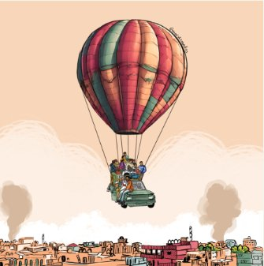
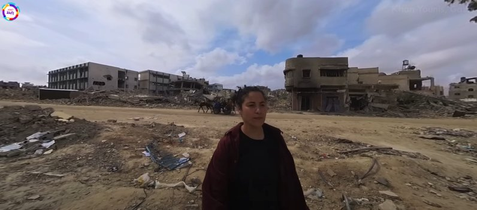
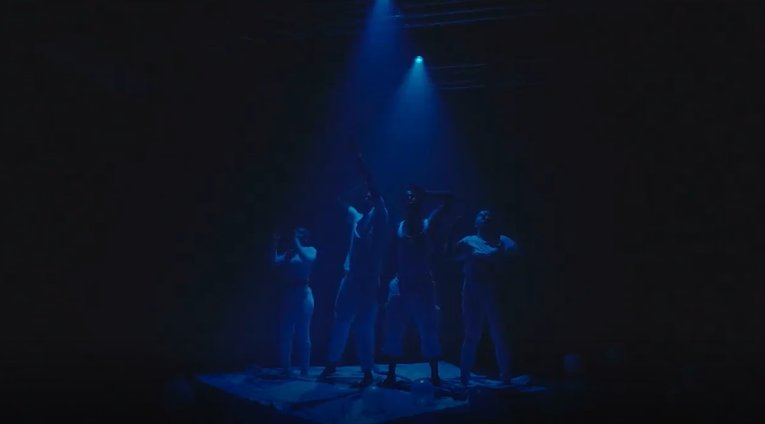
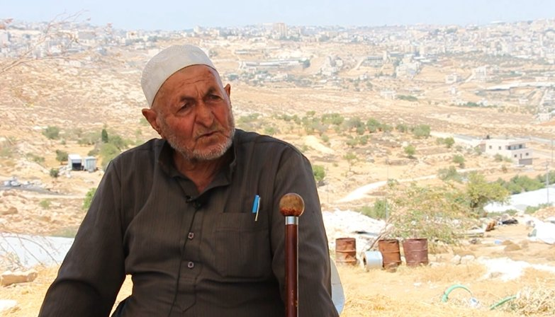
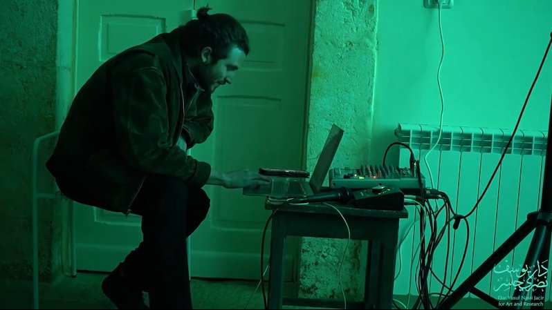
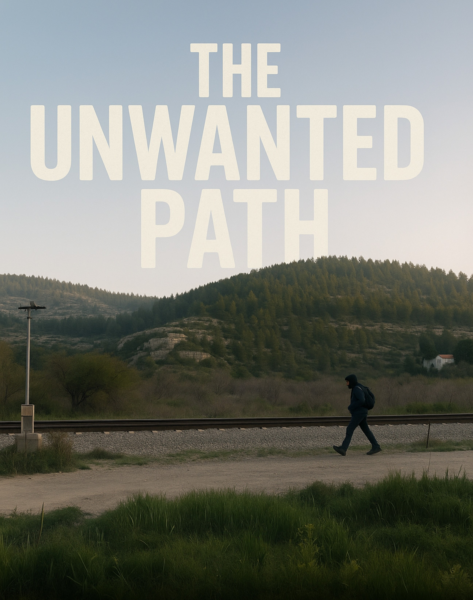
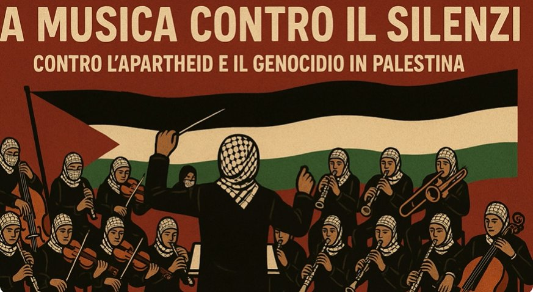
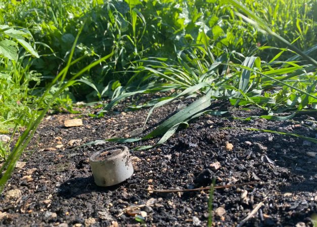

Specializing in Social Impact, Brand Content & Storytelling
"Every frame is a witness. Every sound is a story."
I create high-impact video, photography and digital content that helps brands, organizations and communities tell stories that move people.
I'm a Palestinian multimedia creator focused on impactful storytelling through film, photography and digital media. My work documents identity, culture and human stories through cinematic visuals.
I combine creative direction with technical execution to produce content that connects emotionally and performs digitally — from brand campaigns to immersive VR experiences.

A storytelling podcast tapping into the transformative power of everyday people and their life stories. Every week, tuning into Palestine in all its shapes, sizes, sounds and textures.

Immersive VR experiences featuring prominent journalists, placing international viewers inside Palestinian narratives through spatial media.

Documented and photographed IPOMEA FEST in Italy — capturing the energy, people and moments of the festival through photo and video.

Documentary content capturing stories of resistance from the West Bank, in collaboration with Per Esempio and Balasan.

Documented the second iteration of Nicolás Jaar's sound workshop for Palestinians at Dar Jacir, Bethlehem.

A personal film about Palestinian labor in Israel — told through the eyes of a father and his son, the filmmaker himself.

Documented a powerful protest in Palermo, Sicily — Music Against Silence — featuring orchestral performances and a large crowd standing in solidarity against the genocide in Gaza.

Documented the healing process of a plot of land in Bethlehem — exposed to decades of grenades, fires and pollutants — and the journey to restore it through permaculture.
"Silence is not neutral. Let's make noise together."